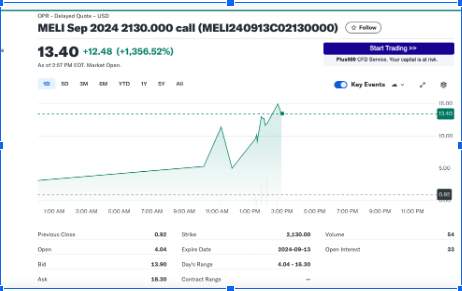
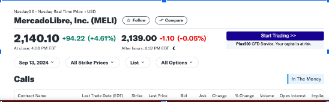
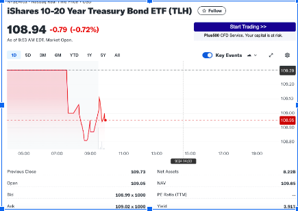

Proyecto Gestión Financiera
Hito 1:
Análisis de Opción put de acciones de Mercado Libre
Fecha de entrega límite: Miercoles 25 de Septiembre
Sector y Temática
El derivado de Mercado Libre, está en el sector de tecnología, ya que su negocio se basa en plataformas digitales y comercio electrónico. La empresa es conocida principalmente por su plataforma de e-commerce y su solución de pago digital.
En el sector tecnológico, Mercado Libre es de los principales en latinoamérica, facilitando transacciones. Esta se enfoca en la creación de un entorno en línea donde hay interacción entre consumidores y comerciantes.
La perspectiva de crecimiento que maneja, es alta, ya que se ha beneficiado mucho del comercio electrónico del sector y se espera que siga siendo actor relevante. Además, su inversión en tecnología de última generación y en la expansión de su red logística refuerza su posición en mercados clave como Brasil, Argentina y México.
Aunque el sector es competitivo y sensible a la evolución económica y política en estos países, Mercadolibre está bien posicionada para capitalizar el aumento del comercio electrónico y los pagos digitales en América Latina.
Motivación
Elegí está empresa debido al dominio que tiene en el mercado E-commerce y también por cómo ha impulsado los pagos digitales y su logística de envío de productos de varias partes del mundo. Esta empresa, ha sido un impulso para la venta de productos de varias empresas y ha generado un tremendo aporte en estas.
Según estudios académicos, se ha demostrado que la expansión de servicios digitales ha sido un motor significativo de crecimiento en el sector. Esto reduce las barreras comerciales y mejora la inclusión financiera, ya que todos compiten de igual a igual. Aparte el comercio electrónico, está relacionado de gran forma con el crecimiento del PIB. Por todo esto, me causó gran interés analizar este activo tan relevante a día de hoy.
Contexto
Respecto al análisis de la opción Mercado Libre tiene tres variables importantes. Por un lado, el precio del activo subyacente que vendría siendo la empresa Mercado Libre, por otra parte la volatilidad implícita y por último, la prima de la opción.
El precio del activo subyacente del activo, actualmente está en 2140 USD, lo que quiere decir que la opción que se está usando está cercana al valor (2130 USD), lo cual es un valor relevante, ya que se especula que podría llegar a 2150 USD. Este valor debería seguir aumentando debido a la expansión de sus servicios y la creciente adopción digital de la región.
 Fuente:Yahoo Finance Figura 1: Opción call Mercado Libre
La volatilidad implícita, mide las expectativas del mercado sobre las futuras fluctuaciones de las acciones de esta empresa. Siendo esta una empresa líder en comercio electrónico en América Latina, su volatilidad tiende a ser elevada, debido a la naturaleza de sus operaciones y su exposición a riesgos. Según el análisis de Zúñiga y Rodriguez (2020) sobre la volatilidad de mercados emergentes, las fluctuaciones en el entorno político y económico afectan bastante a empresas como Mercado Libre y por ende el valor de las opciones. Por otra parte, la prima de la opción refleja el valor temporal e intrínseco. Esta tiene un valor temporal más limitado, ya que su fecha de vencimiento es en septiembre de 2024. Esto otorga tiempo, para que factores de mercado, impacten en el precio de las acciones. Según Merton(1976) las opciones con fechas de vencimiento más cercanas tienen un valor reducido, sin embargo si Mercado Libre se sigue consolidando la empresa podría ganar más valor.
Derivado
Para hacer la proyección del activo se deben definir parámetros:
**Precio inicial del activo subyacente (S0): 2140,1
Precio de ejercicio (K): 2130
Precio del bono: 108,94
Days range: 12,26
Precio de la opción (Q3): 13,4
Estado downer: st(wd)=ds0-(days-range)=d( 2,135.51-12,26)=2123,25
Estado Upper: st(wu)=u*so+(day-range) = u( 2,135.51+12,26)=2147,77
Factor de caída (D): 0,994
Factor de crecimiento (U): 1,005
Rendimiento al vencimiento (r): 3,91%
 MercadoLibre Fuente:Yahoo Finance
 iShares ETF de Bonos del Tesoro a 10-20 Años. Fuente:Yahoo Finance
Para este análisis se ocupa el rendimiento a vencimiento del iShares ETF de Bonos del Tesoro a 10-20 años (TLH), el cual se encuentra alineado con los bonos del tesoro de Estados Unidos. Este actualmente tiene un Yield del 3,91%. Utilizando esta tasa de retorno, se puede hacer una valoración más real de la opción.
Con estos datos se creó la matriz W, obteniendo los siguientes resultados:
Retornos de la Opción MELI Fuente: Elaboración propia
Acá se aprecia cómo se comportan el activo, la opción y el bono en el escenario Upper y Downer. En la primera columna de la matriz W se ve como el valor del bono es -108,94 con un retorno de 425,9 en ambos escenarios. Esto tiene sentido, ya que es un activo libre de riesgo.
Ya para la segunda columna se observa el precio del activo de -2140,1 con un entorno favorable llega a 2150,8 mientras que con uno desfavorable llega a 2127,25. Evidenciando que los cambios no llegan a ser tan drásticos.
En la tercera columna se puede apreciar la opción de compra con su valor de -13,4. Acá se observa que en su estado upper llega a un valor de 20,8 mientras que en su estado downer pierde su valor.
Se definió la expresión para Q3 obteniendo los siguientes valores:
Retornos Opción MELI Fuente: Elaboración propia
También se realizó un modelo Black-Scholes, el cual estima el precio de la opción, asumiendo una tasa libre de riesgo y una volatilidad constante. Acá se usó una volatilidad estimada del 20% y un tiempo de vencimiento de un año donde se contabiliza por mes, aparte de los datos de R, T, S y K que fueron entregados anteriormente.
Con esto se obtuvo lo siguiente:
Código Black- Scholes Fuente: Elaboración propia
El resultado del modelo nos entregó una proyección del valor de la opción de la acción de 57,68. Esto muestra cuánto debería pagar el inversionista por la opción de compra del activo al vencimiento, lo cual es claramente mayor al actual. Esto se puede deber al gran futuro que tiene la empresa a día de hoy y como crece constantemente.
Conclusión
La comparación entre el modelo binomial y el modelo de Black-Scholes muestra una nueva forma para valorar opciones. El binomial segmenta el tiempo en intervalos discretos, lo que nos permite apreciar el aumento y valor del activo subyacente. Acá se ajusta el valor de la opción tomando en cuenta el riesgo, lo que ayuda a realizar una gran proyección para opciones como Mercado Libre.
El Black-Scholes nos entrega un enfoque continuo y es más continuo y simplifica algunos elementos del mercado, por lo que es altamente útil para realizar un análisis y valoración rápida.
Sin embargo, en este caso, para Mercado Libre es más útil el modelo binomial, ya que esta empresa opera en un sector bastante dinámico, muy susceptible a cambios en la innovación y las condiciones del mercado, permitiendo un análisis más detallado.
Referencias
Yahoo Finance (2024) Mercado Libre.Inc (MELI) Options Chain. Available at: https://finance.yahoo.com/quote/MELI/options/ (Accessed: September 2024).
Yahoo Finance (2024) iShares 10-20 Year Treasury Bond ETF (TLH) Available at: https://finance.yahoo.com/quote/TLH/ (Accessed: September 2024).